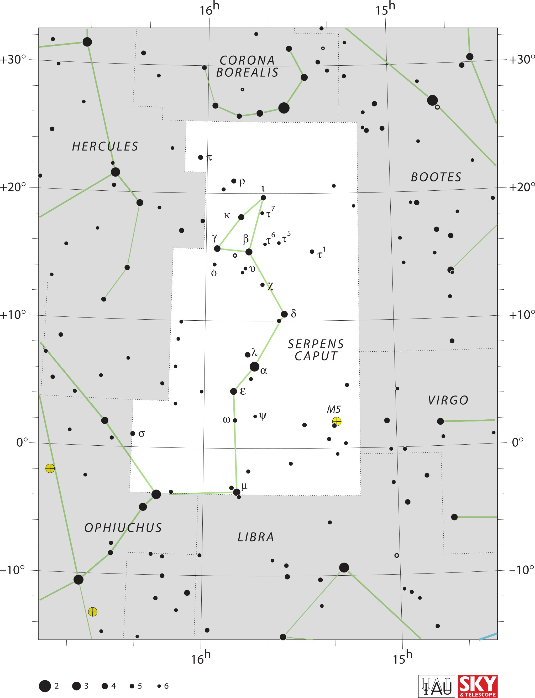

<div data-role="page" id="serpensCaput" data-theme="a">

	<div data-role="header">
		<a href="#home" data-icon="back" data-rel="back">Back</a>
		<h1>Serpens Caput</h1>
		<a href="#home" data-icon="home">Home</a>
	</div>

	<div data-role="content">
		<div class="cssImageMap">
			


			<a href="../messier/m5.html" class="messier" data-x="1220"
				data-y="1520" data-width="120" data-height="120"></a>


			<a href="ophiuchus.html" class="constellation" data-side="left"
				data-x="300" data-y="1970" data-width="350" data-height="70"></a>

			<a href="libra.html" class="constellation" data-side="right"
				data-x="880" data-y="2010" data-width="250" data-height="70"></a>

			<a href="virgo.html" class="constellation" data-side="right"
				data-x="1610" data-y="1480" data-width="250" data-height="70"></a>

			<a href="bootes.html" class="constellation" data-side="right"
				data-x="1550" data-y="640" data-width="250" data-height="70"></a>

			<a href="hercules.html" class="constellation" data-side="left"
				data-x="260" data-y="520" data-width="300" data-height="70"></a>

			<a href="coronaBorealis.html" class="constellation" data-side="right"
				data-x="810" data-y="190" data-width="300" data-height="120"></a>

		</div>

		<div id="here">
			<h2>Serpens Caput</h2>

			<p>Image Credit: IAU and Sky & Telescope magazine (Roger Sinnott
				& Rick Fienberg)
		</div>
	</div>
</div>